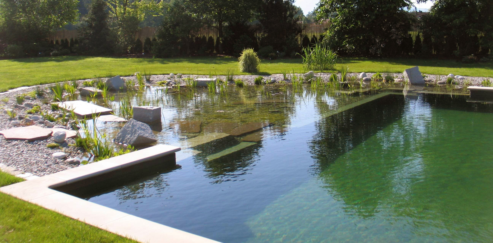
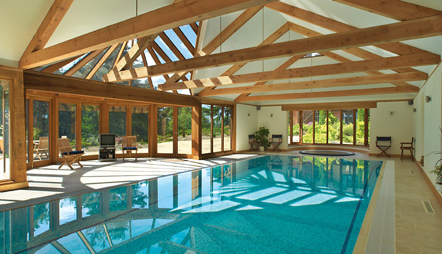

Welcome to the Ottawa West Park Community Pool information site.
Whether you are looking to meet members of your community or just go for a swim, this site will provide you with all the information you need. West Park offers a lovely natural saltwater pool facility both in and outdoors. Our facilities provide the feel of a secluded lake while having the security and cleanliness of a public pool. There will be one lifeguard on staff when swim times are scheduled with an additional guard for peak hours. Please visit our schedule section for more information.
Is public swim right for you? Public pools offer and affordable option to every life style. It meets the busy life style of students and workers and need a quick chance to cool off and do laps. It also provides a viable option for those retired who have some spare time and would like a relaxing and low impact form of exercise. It even works for those hard working mother who would like to keep their kids active, but don’t always have the space or means to do so. Visit our schedule page to find out more about swim times and price page for more about what type of rate would be good for you!